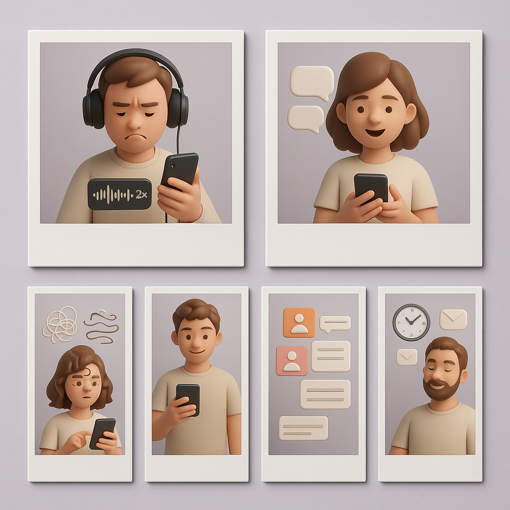

Create a set of 6 premium-looking polaroid photos featuring 3D avatar characters (Pixar-like but subtle, not cartoon/comic), soft studio lighting, realistic materials, clean composition. Each image must include a white polaroid frame with a soft shadow on a light lavender paper background with a very subtle dot texture. No text anywhere. Each image should represent: (1) frustrated 3D avatar wearing headphones, holding phone with a long waveform and a small 2x speed symbol (no text); (2) happy 3D avatar replying with floating chat bubbles (no text) after reading a voice note; (3) messy speech squiggles transforming into clean neat lines (no letters) near the avatar; (4) chaotic group chat icons/cards becoming tidy stacked text cards (no text); (5) confident 3D avatar copy-pasting from phone into a message card (no text); (6) calm 3D avatar with a clock/calendar icon, switching from stressful 'listen later' vibe to relaxed 'read later' vibe (no text). Keep consistent palette and style across all 6.Create a set of 6 premium-looking polaroid photos featuring 3D avatar characters (Pixar-like but subtle, not cartoon/comic), soft studio lighting, realistic materials, clean composition. Each image must include a white polaroid frame with a soft shadow on a light lavender paper background with a very subtle dot texture. No text anywhere. Each image should represent: (1) frustrated 3D avatar wearing headphones, holding phone with a long waveform and a small 2x speed symbol (no text); (2) happy 3D avatar replying with floating chat bubbles (no text) after reading a voice note; (3) messy speech squiggles transforming into clean neat lines (no letters) near the avatar; (4) chaotic group chat icons/cards becoming tidy stacked text cards (no text); (5) confident 3D avatar copy-pasting from phone into a message card (no text); (6) calm 3D avatar with a clock/calendar icon, switching from stressful 'listen later' vibe to relaxed 'read later' vibe (no text). Keep consistent palette and style across all 6.Create a set of 6 premium-looking polaroid photos featuring 3D avatar characters (Pixar-like but subtle, not cartoon/comic), soft studio lighting, realistic materials, clean composition. Each image must include a white polaroid frame with a soft shadow on a light lavender paper background with a very subtle dot texture. No text anywhere. Each image should represent: (1) frustrated 3D avatar wearing headphones, holding phone with a long waveform and a small 2x speed symbol (no text); (2) happy 3D avatar replying with floating chat bubbles (no text) after reading a voice note; (3) messy speech squiggles transforming into clean neat lines (no letters) near the avatar; (4) chaotic group chat icons/cards becoming tidy stacked text cards (no text); (5) confident 3D avatar copy-pasting from phone into a message card (no text); (6) calm 3D avatar with a clock/calendar icon, switching from stressful 'listen later' vibe to relaxed 'read later' vibe (no text). Keep consistent palette and style across all 6.Create a set of 6 premium-looking polaroid photos featuring 3D avatar characters (Pixar-like but subtle, not cartoon/comic), soft studio lighting, realistic materials, clean composition. Each image must include a white polaroid frame with a soft shadow on a light lavender paper background with a very subtle dot texture. No text anywhere. Each image should represent: (1) frustrated 3D avatar wearing headphones, holding phone with a long waveform and a small 2x speed symbol (no text); (2) happy 3D avatar replying with floating chat bubbles (no text) after reading a voice note; (3) messy speech squiggles transforming into clean neat lines (no letters) near the avatar; (4) chaotic group chat icons/cards becoming tidy stacked text cards (no text); (5) confident 3D avatar copy-pasting from phone into a message card (no text); (6) calm 3D avatar with a clock/calendar icon, switching from stressful 'listen later' vibe to relaxed 'read later' vibe (no text). Keep consistent palette and style across all 6.Create a set of 6 premium-looking polaroid photos featuring 3D avatar characters (Pixar-like but subtle, not cartoon/comic), soft studio lighting, realistic materials, clean composition. Each image must include a white polaroid frame with a soft shadow on a light lavender paper background with a very subtle dot texture. No text anywhere. Each image should represent: (1) frustrated 3D avatar wearing headphones, holding phone with a long waveform and a small 2x speed symbol (no text); (2) happy 3D avatar replying with floating chat bubbles (no text) after reading a voice note; (3) messy speech squiggles transforming into clean neat lines (no letters) near the avatar; (4) chaotic group chat icons/cards becoming tidy stacked text cards (no text); (5) confident 3D avatar copy-pasting from phone into a message card (no text); (6) calm 3D avatar with a clock/calendar icon, switching from stressful 'listen later' vibe to relaxed 'read later' vibe (no text). Keep consistent palette and style across all 6.Create a set of 6 premium-looking polaroid photos featuring 3D avatar characters (Pixar-like but subtle, not cartoon/comic), soft studio lighting, realistic materials, clean composition. Each image must include a white polaroid frame with a soft shadow on a light lavender paper background with a very subtle dot texture. No text anywhere. Each image should represent: (1) frustrated 3D avatar wearing headphones, holding phone with a long waveform and a small 2x speed symbol (no text); (2) happy 3D avatar replying with floating chat bubbles (no text) after reading a voice note; (3) messy speech squiggles transforming into clean neat lines (no letters) near the avatar; (4) chaotic group chat icons/cards becoming tidy stacked text cards (no text); (5) confident 3D avatar copy-pasting from phone into a message card (no text); (6) calm 3D avatar with a clock/calendar icon, switching from stressful 'listen later' vibe to relaxed 'read later' vibe (no text). Keep consistent palette and style across all 6.
{kind=link}